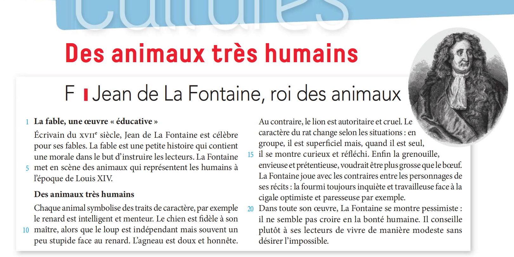

Des animaux
très humains
Очень человечные животные. Jean de La Fontaine, roi des animaux — Жан де Лафонтен, король животных. Подстрочный перевод с подробным разбором слов и оборотов.

Исходная страницаОткрыть оригинал с увеличениемПо ширине · вся страница · полный экран ↗La fable, une œuvre « éducative »
Басня — «поучительное» произведение. Œuvre (f) — произведение; éducative — воспитывающая, обучающая.
Écrivain du XVIIᵉ siècle, Jean de La Fontaine est célèbre pour ses fables.
Близко к текстуПисатель XVII века Жан де Лафонтен знаменит своими баснями.
- écrivain du XVIIᵉ siècle
- писатель XVII векаÉcrivain (m) — писатель; siècle (m) — век. Du = de + le. XVIIᵉ читается dix-septième: семнадцатый.
- être célèbre pour
- быть знаменитым благодаря чему-либо; славиться чем-либоCélèbre — знаменитый. Pour здесь указывает, чем именно человек известен: ses fables — своими баснями.
- ses fables
- его басни; здесь: своими баснямиFable (f) — басня. Ses — притяжательное прилагательное перед существительным во множественном числе: его / её / свои.
La fable est une petite histoire qui contient une morale dans le but d’instruire les lecteurs.
Близко к текстуБасня — это небольшая история, которая содержит мораль с целью поучать читателей.
- une petite histoire
- небольшая история; короткий рассказHistoire (f) — история, рассказ. Petite относится к длине или объёму рассказа.
- qui contient
- которая содержитQui заменяет histoire и является подлежащим. Contient — présent глагола contenir, 3-е лицо единственного числа.
- une morale
- мораль; нравоучениеMorale (f) здесь — вывод басни, её поучительный смысл.
- dans le but de → dans le but d’instruire
- с целью → с целью поучатьBut (m) — цель. Оборот dans le but de + infinitif выражает цель; de сокращается до d’ перед гласной.
- instruire les lecteurs
- поучать, просвещать читателейInstruire — обучать, давать знания, наставлять. Lecteur (m) — читатель; lectrice (f) — читательница.
La Fontaine met en scène des animaux qui représentent les humains à l’époque de Louis XIV.
Близко к текстуЛафонтен выводит в качестве действующих лиц животных, которые изображают людей эпохи Людовика XIV.
- mettre en scène → met en scène
- выводить в качестве действующих лиц; изображатьБуквально «ставить на сцене». Здесь речь о персонажах басен. Met — présent глагола mettre.
- des animaux
- животныхAnimal (m) — животное; множественное число — animaux, окончание -al меняется на -aux.
- qui représentent les humains
- которые представляют, изображают людейReprésenter — представлять, изображать, олицетворять. Humain как существительное — человек; как прилагательное — человеческий.
- à l’époque de Louis XIV
- в эпоху Людовика XIVÉpoque (f) — эпоха, время. В имени короля XIV читается quatorze: Louis quatorze.
Des animaux très humains
Очень человечные животные. Humain — человеческий; здесь: с человеческими чертами характера.
Chaque animal symbolise des traits de caractère, par exemple le renard est intelligent et menteur.
Близко к текстуКаждое животное символизирует черты характера: например, лис умён и лжив.
- chaque animal
- каждое животноеПосле chaque существительное стоит в единственном числе; поэтому symbolise тоже в единственном числе.
- des traits de caractère
- черты характераTrait (m) — черта, признак; caractère (m) — характер. Здесь trait не означает «штрих» или «линию».
- par exemple
- напримерУстойчивый оборот; exemple (m) — пример.
- le renard / intelligent et menteur
- лис / умный и лживыйRenard (m) — лис. Menteur — лживый, лгун; женская форма menteuse. Mentir — лгать.
Le chien est fidèle à son maître, alors que le loup est indépendant mais souvent un peu stupide face au renard.
Близко к текстуПёс верен своему хозяину, тогда как волк независим, но часто немного глуповат перед лицом лиса.
- être fidèle à son maître
- быть верным своему хозяинуFidèle à — верный кому-либо. Maître (m) здесь — хозяин животного, а не учитель. Son — его / её / свой перед существительным мужского рода.
- alors que
- тогда как; в то время какЗдесь оборот противопоставляет характеры пса и волка, а не указывает время.
- le loup / indépendant
- волк / независимыйLoup (m) — волк. Indépendant — независимый; женская форма indépendante.
- souvent un peu stupide
- часто немного глупыйSouvent — часто; un peu — немного, слегка; stupide — глупый. Un peu смягчает характеристику.
- face au renard
- перед лицом лиса; в столкновении с лисомFace à — перед, лицом к лицу с, в противостоянии с. Au = à + le. Здесь волк оказывается глуповатым именно рядом с хитрым лисом.
L’agneau est doux et honnête.
Близко к текстуЯгнёнок кроток и честен.
- l’agneau
- ягнёнокAgneau (m) — ягнёнок; артикль le сокращён до l’ перед гласной.
- doux
- кроткий; мягкий; нежныйЗдесь черта характера: незлобивый, кроткий. Женская форма — douce.
- honnête
- честный; порядочныйHonnête имеет одинаковую форму в мужском и женском роде; h не произносится.
Au contraire, le lion est autoritaire et cruel.
Близко к текстуНапротив, лев властен и жесток.
- au contraire
- напротив; наоборотУстойчивый оборот вводит противопоставление кроткому ягнёнку.
- le lion / autoritaire
- лев / властный, авторитарныйAutoritaire — стремящийся командовать, навязывать свою волю. Форма одинакова для обоих родов.
- cruel
- жестокийЖенская форма — cruelle, с удвоенным l.
Le caractère du rat change selon les situations : en groupe, il est superficiel mais, quand il est seul, il se montre curieux et réfléchi.
Близко к текстуХарактер крысы меняется в зависимости от ситуации: в группе она поверхностна, но, когда остаётся одна, проявляет любознательность и рассудительность.
- le caractère du rat change
- характер крысы меняетсяRat (m) — крыса; du = de + le. Change — présent глагола changer, здесь «изменяется».
- selon les situations
- в зависимости от ситуаций; смотря по обстоятельствамSelon — согласно, в зависимости от. Situation (f) — ситуация, положение.
- en groupe / quand il est seul
- в группе / когда он одинSeul — один, в одиночестве. Во французском rat мужского рода, поэтому il и seul; русское «крыса» — женского рода.
- superficiel
- поверхностныйЗдесь о характере: не склонный глубоко вникать. Женская форма — superficielle.
- se montrer curieux et réfléchi
- проявлять любознательность и рассудительностьSe montrer + прилагательное — проявлять себя каким-либо, оказываться каким-либо; не буквальное «показывать себя».
- curieux / réfléchi
- любознательный / рассудительный, вдумчивыйCurieux здесь — любознательный, а не «странный». Réfléchi — склонный обдумывать. Женские формы: curieuse, réfléchie.
Enfin la grenouille, envieuse et prétentieuse, voudrait être plus grosse que le bœuf.
Близко к текстуНаконец, завистливая и самонадеянная лягушка хотела бы быть крупнее быка.
- enfin / la grenouille
- наконец / лягушкаEnfin завершает перечисление персонажей; grenouille — существительное женского рода.
- envieuse et prétentieuse
- завистливая и самонадеянная, тщеславнаяEnvieux — завистливый, prétentieux — самонадеянный, с завышенным мнением о себе. Здесь женские формы на -euse.
- voudrait être
- хотела бы бытьVoudrait — conditionnel présent глагола vouloir, 3-е лицо единственного числа. Передаёт желание, а не факт.
- plus grosse que le bœuf
- крупнее быка; больше, чем быкPlus + прилагательное + que — сравнительная степень. Grosse — женская форма gros: большой, крупный, толстый. Bœuf (m) — бык, вол; здесь не «говядина».
La Fontaine joue avec les contraires entre les personnages de ses récits : la fourmi toujours inquiète et travailleuse face à la cigale optimiste et paresseuse par exemple.
Близко к текстуЛафонтен обыгрывает противоположности между персонажами своих рассказов: например, постоянно озабоченная и трудолюбивая муравьиха перед лицом оптимистичной и ленивой цикады.
- jouer avec les contraires
- играть с противоположностями; обыгрывать противоположностиContraires здесь существительное во множественном числе: противоположности, противоположные качества.
- entre les personnages de ses récits
- между персонажами его рассказовEntre — между; personnage (m) — персонаж; récit (m) — рассказ, повествование. Ses récits — его рассказы.
- la fourmi toujours inquiète et travailleuse
- постоянно озабоченная и трудолюбивая муравьихаFourmi (f) — муравей. Inquiète — обеспокоенная, тревожная; travailleuse — трудолюбивая. Мужские формы: inquiet, travailleur.
- face à la cigale
- перед лицом цикады; в противопоставлении цикадеFace à связывает противоположные образы. Cigale (f) — цикада; здесь сохранено название насекомого из французского текста.
- optimiste et paresseuse
- оптимистичная и лениваяOptimiste имеет одну форму для обоих родов. Paresseuse — женская форма paresseux: ленивый. Paresse (f) — лень.
Dans toute son œuvre, La Fontaine se montre pessimiste :
Близко к текстуВо всём своём творчестве Лафонтен проявляет себя пессимистом:
- dans toute son œuvre
- во всём его творчествеŒuvre (f) — произведение, творчество, совокупность произведений. Toute согласуется с œuvre в женском роде.
- son œuvre
- его творчество; своё творчествоПеред существительным женского рода, начинающимся с гласной, употребляется son, а не sa: son œuvre.
- se montrer pessimiste
- проявлять себя пессимистом; обнаруживать пессимизмPessimiste — пессимистичный, пессимист. Se montre — présent, 3-е лицо единственного числа.
il ne semble pas croire en la bonté humaine.
Близко к текступохоже, он не верит в человеческую доброту.
- ne semble pas croire
- по-видимому, не верит; не кажется верящимSembler + infinitif — казаться, по-видимому что-либо делать. Ne… pas окружает личную форму semble; croire остаётся инфинитивом.
- croire en
- верить вЗдесь вера в существование или ценность качества, а не croire quelqu’un — верить чьим-либо словам.
- la bonté humaine
- человеческая добротаBonté (f) — доброта; bon — добрый, хороший. Humaine — женская форма humain: человеческий.
Il conseille plutôt à ses lecteurs de vivre de manière modeste sans désirer l’impossible.
Близко к текстуСкорее он советует своим читателям жить скромно, не желая невозможного.
- conseiller à quelqu’un de faire quelque chose
- советовать кому-либо сделать что-либоÀ ses lecteurs — кому: своим читателям. De vivre — что делать: жить. Conseille — présent от conseiller.
- plutôt
- скорее; предпочтительнееЗдесь уточняет, какой совет автор скорее даёт читателям. Не путать plutôt и plus tôt — раньше.
- de manière modeste
- скромным образом; скромноDe manière + прилагательное описывает способ действия. Manière (f) — способ, манера; modeste — скромный.
- sans désirer
- не желая; без желанияSans + infinitif — не делая чего-либо. Désirer — желать, стремиться получить.
- l’impossible
- невозможноеПрилагательное impossible употреблено как существительное с артиклем: то, что невозможно.